Warren's Microcoded CPU
(c) February 2012, GPL3 licence
Introduction
I wanted to design a microcoded CPU which had a reasonable number
of instructions and RAM, but was still reasonably clean and elegant.
I've used the microcode logic structure that Mythsim
uses, but I've designed the CPU from scratch and implemented it using
Logisim.
Download
Here is a Zip file which contains the microcoded CPU as a Logisim
circuit, a microassembler and an assembler written in Perl, a text
file containing a minimal set of microinstructions, and a sample assembly
language file:
All files are copyright Warren Toomey and distributed under the GPL3
licence. I would recommend that you read through the details of the
CPU and the assemblers before loading the CPU into Logisim.
CPU Overview
The CPU has a 16-bit address bus and a 16-bit data bus. With Logisim,
you can only address the 16-bit words as words not bytes. This also
means that you only need to add 1 to the PC to move to the next whole-word
instruction, not 2. There are 8 general purpose 16-bit registers,
an ALU which can do 8 different operations, an instruction register
and an immediate register to hold immediate (literal) values.
Each simple instruction is 1-word (16 bits) long with these fields:
- 7-bit opcode (MSBs)
- 3-bit t-register (usually the 2nd operand to the ALU)
- 3-bit s-register (the 1st operand to the ALU)
- 3-bit d-register (LSBs, usually the destination of the ALU operation)
Extended instructions are two words long where the first word has
the same format as above and is followed by a 16-bit immediate/literal
value.
The Main Datapaths
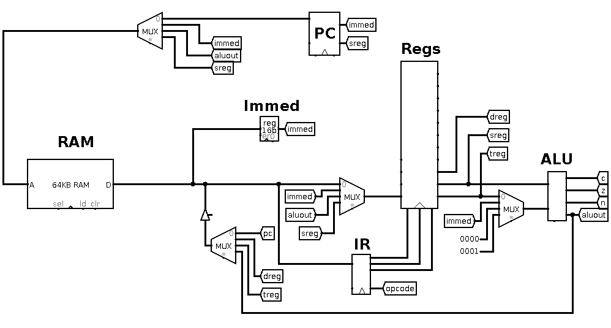
The RAM unit holds 216words of 16-bits each. The address bus
coming in on the left of the RAM unit is controlled by the multiplexer
above it, and the PC connects into this multiplexer. The data bus
coming out of the RAM unit connects to the immediate register (Immed),
the instruction register (IR), and a multiplexer which feeds into
the register file (Regs).
Two of the outputs from the register file head towards the ALU, but
there is another multiplexer which can choose the second operand to
the ALU. The ALU's output can be placed onto the data bus or back
into the register file.
Let's look at the components of the CPU.
The ALU
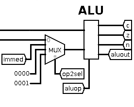
The ALU takes two 16-bit data inputs and produces a 16-bit data output
as well as zero, negative and carry flags. The aluop control
line specifies which of the 16 available operations to perform. One
of the data inputs comes from the s-register; the other from either
the t-register, the immediate register, constant 0 or constant 1 depending
on the value of the op2sel control line. The ALU output goes
to several places: it can be written out on the data bus, used as
an address, or it can be written back into the register file.
The immediate input into the ALU allows us to do ALU operations such
as register + immediate value. The constant 1 input allows us to do
operations such as register = register + 1, i.e. increment register.
But why the constant 0 value? This allows for comparisons against
zero, e.g. such instructions as branch if register is equal to zero.
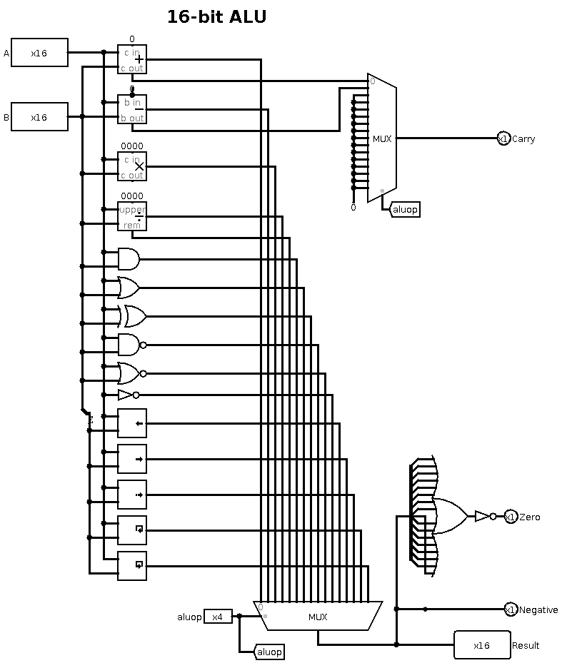
Internally, the ALU is implemented using the built-in Logisim maths
and logic units. The 16 available operations which feed into the multiplexer
at the bottom are: add, sub, mul, div, remainder, and, or, xor, nand,
nor, not, logical shift left, logical shift right, arithmetic shift
right, rotate left and rotate right.
The top multiplexer outputs the carry result but only from the add
and subtract units; it is zero for all other operations. The negative
output is simply the most significant bit of the result. The zero
output is calculated by ORing all the result bits together and inverting:
if all bits are zero, the 16-bit OR is zero and the inversion is true.
The Register File
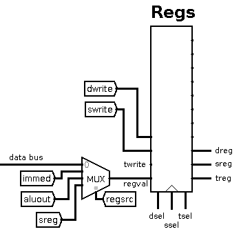
The register file contains eight 16-bit general purpose registers.
The dsel, ssel and tsel control lines select
which of the eight registers become the d-register, s-register and
t-register. The d-register is generally used as the destination register
for ALU operations. The s- and t-registers are used as ALU sources.
The ALU outputs all three registers on the right, but only the s-
and t-registers go into the ALU. The d-register output is used elsewhere.
The regval input to the ALU is written to a register when one
of the dwrite, swrite or twrite lines and enabled.
This does mean that the same input could be written to multiple registers
at the same time, but in practice only one write line is ever enabled
at any time.
The source of regval is determined by the multiplexer and is
controlled by the regsrc line. The options are: from the data
bus, from the immediate register, from the ALU output, or from the
s-register.
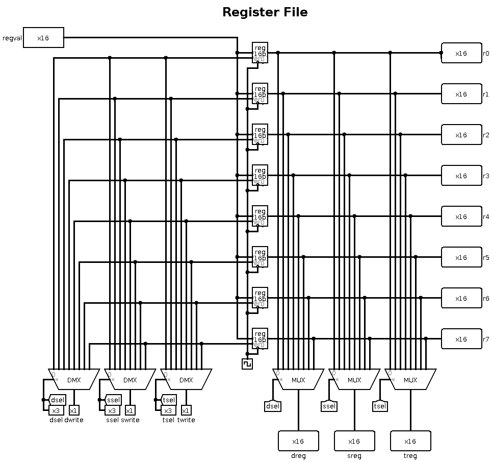
Internally, the regval value is sent to all eight registers,
but their enable lines are controlled by the three demultiplexers
at the bottom-left. On each demultiplexer, when the write line
is enabled, the sel value causes the write to be delivered
to the appropriate register.
On the right, three multiplexers take all register outputs and use
the sel values to determine which register to output on the
dreg, sreg and treg outputs.
Finally, on the right, all eight register values are output so that
we can attach probes to the register file in the main circuit and
see their values.
The Immediate Register
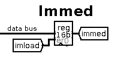
The 16-bit immediate register isn't visible to the programmer. It
typically holds the immediate second word from the 2-word instructions.
It is loaded from the data bus when the imload control line
is enabled.
The Instruction Register
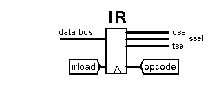
The 16-bit IR is loaded from the data bus when the irload control
line is enabled. It just splits out the 16-bits into the 7-bit opcode
and 3-bit dsel, ssel & tsel control lines.
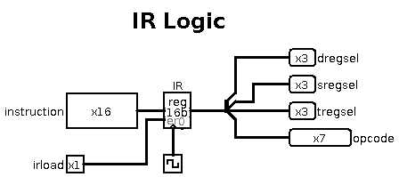
Internally, it is a single register with a bit-splitter on the right.
The Program Counter
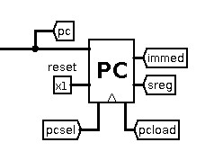
The PC is a 16-bit register which is loaded when the pcload
control line is enabled. Its new value is controlled by the pcsel
control line, and allows these inputs:
- PC+1, i.e. increment the PC
- immediate register, used to jump the PC to an absolute address
- PC+immediate, used to branch forwards or backwards relative to the
current PC
- s-register, used to return from a function back to the calling function
There's also a reset line which I use to quickly restart program
execution at address 0.
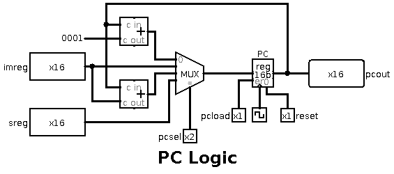
Internally, you can see that the PC's new value is chosen by a multiplexer
which receives PC+1 using an adder, the immediate register, PC+immediate
with another adder, and the s-register value.
The Data Bus
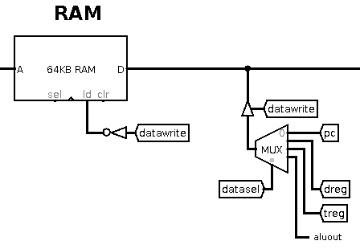
Data normally flows from RAM onto the 16-bit data bus; this goes into
the immediate register, the IR, and into the multiplexer before the
register file.
However, when the datawrite control line is enabled, it allows
writes out to RAM. There is a controlled buffer which lets the data
out onto the bus from the CPU. The multiplexer controlled by the datasel
line chooses what to write on the data bus: the PC's current value,
the d-register, the t-register or the ALU output.
The PC value is used when we are doing a jump to subroutine, so that
its old value is saved to memory before the jump. We use the d-register
value when doing instructions like store word Rd, address. At present,
the other two inputs (treg and aluout) are unused, so
we could lose one datasel bit and make it a 2-way multiplexer.
One thing to note is that the ALU output can be s-register+0, so we
can write the s-register out on the data bus using aluout.
The Address Bus
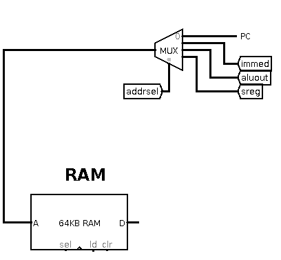
The 16-bit address bus gets its value from one of four inputs controlled
by the addrsel control line: the PC, the immediate register,
the ALU output or the s-register. This allows such addressing modes
as:
- PC: fetch the next instruction
- immediate: fetch from a fixed memory location
- ALU: fetch from immediate+s-register, i.e. indexed addressing, and
fetch from s-register+t-register
- s-register: indirect addressing where the s-register holds a pointer
The Microcode Logic
We've now seen the main components of the CPU and the datapaths. Each
of the components is controlled by one or more control lines. It's
now time to turn our attention to the microcode logic which outputs
the values for these control lines.
Each machine-code instruction is interpreted by the microcode logic
as several microinstructions. Each microinstruction enables certain
control lines which do things as update a register's value, command
the ALU to perform a certain operation, fetch a value from memory
etc. After each microinstruction, the microcode logic has to determine
which next microinstruction to perform.
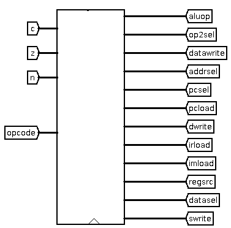
The microcode unit takes as inputs the current opcode and the
n, v and c ALU outputs. It then outputs all the
control lines which control the components and busses: aluop,
op2sel, datawrite, addrsel, pcsel, pcload,
dwrite, irload, imload, regsrc, datasel
and swrite.
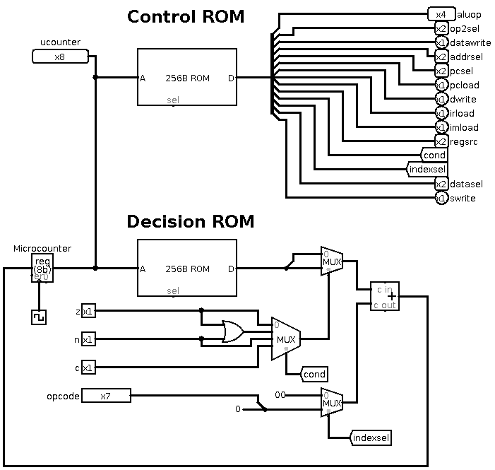
Internally, the microcode logic is implemented using two ROMs and
a counter. Each ROM has 256 rows where each row stores a single microinstruction.
This is known as horizontal microcode.
The control ROM is 32-bits wide, and on each row the bits enable or
disable all the CPU control lines for this microinstruction. That's
why there is the big bit splitter which splits the 32-bit ROM output
into the various control lines. At present, only 23 out of the 32
bits are used.
After each microinstruction, the microcontroller needs to know which
next microinstruction to perform. The decision rom is 16-bits wide,
and each row is two 8-bit fields:
- a row number to jump to if the microinstruction is "true"
- a row number to jump to if the microinstruction is "false"
If both are the same value, this is effectively a jump always command,
so the values 5, 5 would cause the current microinstruction to jump
to row 5 and do that microinstruction next. For high-level instructions
which are composed of several microinstructions, this is used to move
to the next microinstruction in the sequence.
The microinstruction at row 0 is the one that fetches the instruction
into the IR, so the last microinstruction in any high-level instruction
will have 0,0 as the jump values.
There is a 4-way multiplexer controlled by the cond line. This
uses the ALU flags to decide what to do, and is used on branch instructions.
For example, to do a high-level instruction such as BEQ Rs,
Rt, immed, we would first use the ALU to do Rs - Rt. If the ALU
zero flag was true, then the s- and t-register values are equal. In
the control ROM we would set cond=0 to select the z
flag. This would choose the "true" row number to jump to if
z is true, otherwise it would jump to the false row. In this
way, we would be able to set (or not set) the PC to the immediate
value based on the zero flag from the ALU.
One thing left to explain is the multiplexer controlled by the indexsel
line. Normally we want to jump to a specific next row in the ROMs.
For example, here is the microassembly code to fetch an instruction
into the IR:
fetch: addrsel=pc irload=1 # Get the data from the address in the PC, load the IR [ row 0 ]
pcload=1 pcsel=pc # Increment the PC by 1 [ row 1 ]
At this point we want to jump to a microinstruction row based on the
value of the opcode, not to a single specific row number. Here, we
enable the indexsel line, and use values 2, 2 for the true/false
jump rows. With the indexsel line enabled, the adder now adds 2 +
opcode to get the row number. So if we are doing opcode 10,
the next row would be 12. This implies that rows 2+0 up to 2+127 contain
the first microinstruction for the high-level instructions with opcodes
0 to 127.
It also means that, for high-level instructions which are composed
of several microinstructions, they cannot simply go to the next microinstruction
after the first one as that belongs to a different high-level instructions.
Instead, the rows after 2+127 are used to hold the rest of the microinstruction
sequence for each high-level instruction, and the last one in each
sequence jumps to 0, 0.
For more details on how this (horizontal) microcode works, have a
look at Mythsim which is where I
borrowed the idea.
The CPU as a Logisim Circuit
If you now unpack the Zip file at the top of this page, you will find
the CPU as a Logisim circuit. When you load it into Logisim, you need
to do three things:
- Load the control ROM with an image.
- Load the decision ROM with an image.
- Load the RAM with a program image to run.
The output from my microassembler below is two ROM images, ucontrol.rom
and udecision.rom, which you can load into the simulated
CPU ROMs in the ucodelogic component. The output from my assembler
below is a RAM image (ending with the suffix .ram) which you
can load into the simulated CPU RAM in the main circuit.
If you reset the simulation in Logisim, the ROMs are kept intact but
the RAM is wiped, so you need to reload it. Of course, if you make
any changes to the microcode with the microassembler, you need to
reload the ROM images, too.
Example Programs
The Zip file comes with a text file, basic_microcode, which
contains the microcode that implements just a few machine instructions.
There is also a text file, basic_program.s, which is an
assembly program that uses these instructions to add the numbers from
1 up to 100 and store the result at address 256 (i.e. address 0x100).
To assemble the file basic_microcode into the two ROM files
ucontrol.rom and udecision.rom, do this command
at the command-line:
$ ./uassem basic_microcode
To assemble the program basic_program.s into the RAM image
file basic_program.ram, do this command at the command-line:
$ ./massem basic_program.s
You can now load the ROM and RAM file into the ROM and RAM chips inside
Logisim, and start the clock ticking to run the program. You should
see register R1 decrement, and the register R0 accumulate the running
sum. If you set the clock ticks to a frequency of 32Hz it makes things
go fast enough, but stop the ticks when R1 gets close to 1. Then manually
step the ticks until you see the instruction at address 0x0a
which stores the result of 0x13ba into address 0x100.
Your Challenge
As with Mythsim, most of the machine-code instructions have not been
implemented in microcode. I've done this on purpose so that you get
the challenge of implementing them yourself. Read through the text
file list_of_instructions which describes the set of instructions
that the assembler knows about, and exactly what each instruction
has to achieve.
Your task is to implement at least these instructions, and any other
instructions that you would like the CPU to perform. To do this, you
need to learn the syntax of the microcode assembly language.
The Microcode Assembler and Its Assembly Language
I have quickly written two Perl programs, uassem and massem.
Both are fragile and proof of concept, and they both need refactoring
or rewriting from scratch! However, they will suffice for now. The
uassem program is the microcode assembler. Here is the syntax
of the input that it expects.
The input file (the single argument on the command line) is a text
file. Blank lines are ignored. Any text after a hash (#) symbol is
ignored. The program's output is the two ROM images, ucontrol.rom
and udecision.rom.
Lines can start with a text label followed by a colon, or a decimal
number followed by a colon. Microcode instructions can jump to text
labels as their next instruction. Numeric labels indicate the first
microinstruction for the machine-code instruction with that opcode
number.
After the optional label, each line is divided into two sections separated
by a comma. The first section lists the control lines which are enabled
by the microinstruction. The second section describes the decision
as to how to find the next microinstruction to execute.
The first section is a space-separated list of control-line=value
commands. Read through the uassem file and at the top you
will see the available control-line=value commands. If you
do not name a control line, then it will have the default value of
0.
The second section determines the next microcode instruction. The
available commands here are:
- empty, i.e. no comma, no command. Execution continues with the next
microinstruction in the file.
- goto label. Continue execution with the microinstruction that
has the given label.
- if value then label1 else label2. If the value (z, n,
c or norz) is true, then continue with the microinstruction
at label1, otherwise continue with the microinstruction at
label2.
- if value then label1. If the value (z, n, c
or norz) is true, then continue with the microinstruction at
label1, otherwise continue with the next microinstruction.
- opcode_jump. This command must only be used once in the input
file. It tells the microcode controller to jump to the first microinstruction
to execute the instruction with the given opcode in the instruction
register.
Example Microcode
Let's have a look at the existing basic_microcode file to
see what it does.
# A small set of microinstructions for the CPU
# (c) GPL3 Warren Toomey, 2012
#
fetch: addrsel=pc irload=1
pcload=1 pcsel=pc, opcode_jump
#
# ALU operations on Rd,Rs,Rt
0: aluop=add op2sel=treg dwrite=1 regsrc=aluout, goto fetch
#
# Jump compared to zero operations
#
# JNEZ Rs,immed
40: addrsel=pc imload=1
aluop=sub op2sel=0, if z then pcincr else jump
#
# Load immediate Rd, immed
63: addrsel=pc dwrite=1 regsrc=databus
pcload=1 pcsel=pc, goto fetch
#
#
# Store Rd into address from immed
65: addrsel=pc imload=1
addrsel=immed datawrite=1 datasel=dreg
pcload=1 pcsel=pc, goto fetch
#
# Other code which we call
pcincr: pcload=1 pcsel=pc, goto fetch
jump: pcload=1 pcsel=immed, goto fetch
The fetch code reads in the instruction in memory that the
PC points to, increments the PC by 1 and then jumps to the microinstruction
for the instruction's opcode. That's 2 microinstructions done, so
the first microinstruction for opcode 0 (ADD) is at location 2+0=2.
The ADD instruction is implemented as one microinstruction: tell the
ALU to add, the second operand is the t-reg, write into the d-reg
using the ALU's output. Finally, go to the fetch microinstruction
to start the next machine-code instruction. Note that the last instruction
in the sequence that implements one machine-code instruction should
go back to fetch.
The JNEZ (jump absolute to immed if Rs is not equal to zero) uses
an immediate value, so this needs to be loaded into the immediate
register. Then the ALU is commanded to do Rs - 0. If the result is
zero (they were equal), we go to to pcincr, otherwise to jump.
pcincr simply increments the PC (to skip over the immediate
value) and returns to fetch another instruction. jump
sets the PC to the immediate value (i.e. an absolute jump) and returns
to fetch another instruction.
The LI (load Rd with an immediate value) doesn't load the immediate
value into the immediate register. We have already incremented the
PC so it points at the memory location where the immediate value is.
Therefore, the microcode at row 63 loads the d-register straight off
the data bus, using the PC as the address. Then we increment the PC
(to skip over the immediate value) and return to fetch another
instruction.
The SW (store word from Rd into memory at location pointed by immediate)
also uses an immediate value. The microcode on row 65 loads the immediate
register. The next microinstruction uses the immediate value as an
address, and writes the d-register to memory. Finally, we increment
the PC (to skip over the immediate value) and return to fetch
another instruction.
Optimisations
There are several ways to optimise the total number of microinstructions,
and the number of microinstructions per single machine-code instruction.
The first thing to note is that the main components of the CPU (register
file, ALU, PC, multiplexers etc.) are somewhat independent, so a single
microinstruction can send control line values out to several components
in parallel. You can get a lot done with a single microinstruction.
However, watch the registers. If you save a value into a register,
then it isn't visible until the next microinstruction.
The second thing to note is that, if the last one or more microinstructions
are common to several machine-code instructions, then you can give
them a label and place them after the opcode microinstructions. Then
simply go to this set of microinstructions at the end of all of the
opcode microinstructions. In effect, you are creating a sort-of subroutine
or macro which is common to several machine-code instructions. Unfortunately,
you can only do this for the microinstructions at the end of a sequence,
not at the beginning or in the middle.
Finally, think laterally. The LI (load Rd with an immediate value)
instruction above is an example where we could avoid a microinstruction
by not loading the immediate register. The fact that the ALU can get
constant 0 and constant 1 inputs (and its value can be accessed in
several places) can be convenient.
The High-level Assembler and Assembly Language
The massem program is the machine-code assembler. Here is
the syntax of the input that it expects.
The input file (the single argument on the command line) is a text
file. Make sure it has a dot followed by a suffix. The output is a
text file with the suffix changed to .ram.
Blank lines are ignored. Any text after a hash (#) symbol is ignored.
Lines can start with a text label followed by a colon, which defines
a label that can be absolute jumped to, or relatively jumped to. There
are no macros or directives as yet. Execution starts at the first
assembly instruction in the file.
After the optional label, there is the instruction name followed by
a comma-separated list of operands. To make writing the assembler
easier, every instruction has a unique name and set of operands, even
if two instructions do the same thing but with different sets of operands.
If you read the top of massem, you will see the types and
number of operands each instruction takes. Here's the syntax for each
one:
- d, s and t: This specifies a d-, s- or t-register.
You can use Rn or rn, where the first letter is `R'
or `r', and is followed by a digit in the range 0 to 7 inclusive.
- i: This specifies an absolute immediate value. You can use
either a text label, a decimal value, or a hexadecimal value starting
with 0x. The value will be used in an absolute sense. For jumps,
this means PC is loaded with this value.
- I: This specifies a relative immediate value. You can use either
a text label, a decimal value, or a hexadecimal value starting with
0x. The value will be used in an relative sense. For jumps,
this means PC is loaded with PC + this value.
- X: This specifies an indexed address. You can use immediate(Rn)
or Rn(immediate) or (Rn). If you use an immediate value,
then it can be a text label, a decimal value, or a hexadecimal value
starting with 0x. The immediate value will be used in an absolute
sense. If you don't specify an immediate value, the immediate value
of 0 will be used.
- S: This specifies an indexed address. You can use Rs(Rt) here,
i.e. the s- and t-registers.
Example Assembly Program
Here is the assembly-language program that comes with the Zip file:
# This program uses the instructions defined in the
# basic_microcode file. It adds the numbers from 100
# down to 1 and stores the result in memory location 256.
# (c) GPL3 Warren Toomey, 2012
#
main: li r0, 0 # r0 is the running sum
li r1, 100 # r1 is the counter
li r2, -1 # Used to decrement r1
loop: add r0, r0, r1 # r0= r0 + r1
add r1, r1, r2 # r1--
jnez r1, loop # loop if r1 != 0
sw r0, 256 # Save the result
This uses only the 4 instructions defined in the basic_microcode
file. The massem assembler does recognise more than 70 instructions,
so if you implement the missing ones yourself you can replace instructions
like li r2, -1 with dec r2, for example.
Reflections on Building the CPU
Back in 2010 I designed a simple CPU with hard-wired logic,
and I wanted to complement it with the design of a microcoded CPU.
While I enjoyed doing both, the microcoded CPU was a much easier task
once I grokked the idea of microcode control.
When I did the hardcoded CPU, I really had to spend a lot of time
designing the datapaths before starting on the control logic. I had
to rationalise the instruction set and instruction fields so that
it would require less gates to decode each instruction. There really
was no freedom to try things out and make design changes. And wiring
up the gates in the control logic was interesting, to say the least.
With the microcoded CPU, I found that there was a lot of design freedom.
I created a reasonable datapath design and the microcode logic. From
there I could start writing instructions, and I could do this in any
order as I wasn't decoding specific opcode bits.
I also found that, as I wanted to make an instruction but the existing
datapath couldn't do it, it was relatively simple to alter the datapath.
For example, the multiplexer onto the address bus had only 2 inputs
to start with. I extended this to 4 inputs, and all I had to do was
change the control line width coming out of the microcode unit. Ditto
the multiplexer for the ALU second operand. Similarly, I started with
8 ALU operations and near the end I changed this to 16 operations.
Overall, I found building the microcoded CPU a lot easier to do than
the hardwired CPU, and when I needed to alter my design, it was much
easier to do this with the microcoded CPU.
Bugs, Issues, Comments
I expect the circuit and the assemblers to have some bugs, so if you
find some bugs, if you have any issues or if you create some machine-code
instructions which I didn't, you can contact me using this address:
wtoomey at tuhs dot org.
File translated from
TEX
by
TTH,
version 3.85.
On 27 Feb 2012, 15:38.